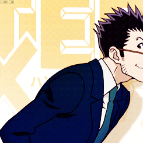
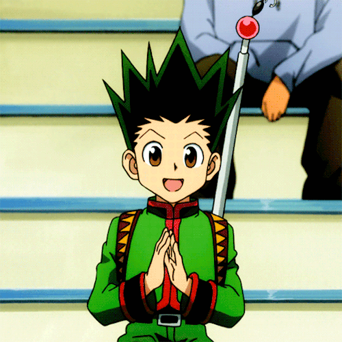
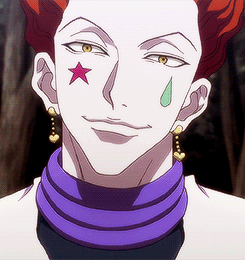
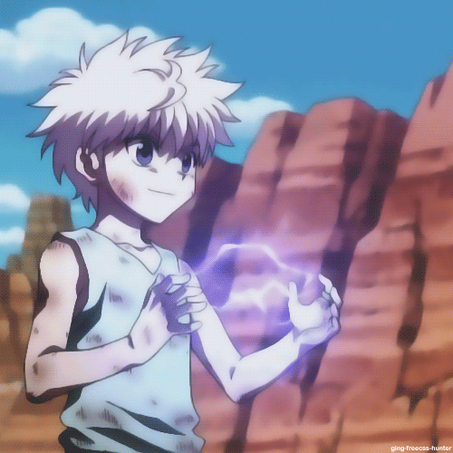
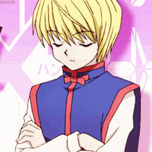
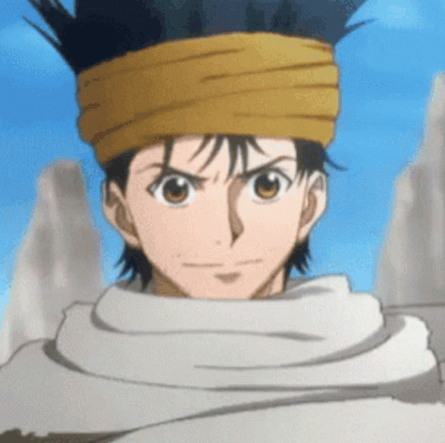

-
leorio
Descrição
É o membro mais velho do grupo, Leorio quer se tornar um Hunter para conseguir dinheiro e estudar medicina, podendo então alcançar seu sonho de se tornar um médico. Esse desejo vem devido um incidente que lhe ocorreu há algum tempo atrás, quando seu melhor amigo ficou doente e morreu, por não possuir dinheiro para se tratar. Leorio é um personagem cômico, mas possui grande habilidade, embora não entre em tantos confrontos quanto os outros protagonistas. No anime, ele só luta uma vez (contra Kurapika, no inicio do teste Hunter). Existe uma forte comparação entre Leorio e Kazuma Kuwabara, personagem da série Yu Yu Hakusho, uma vez que os dois são os personagens mais bem humorados das duas séries e que ambas são obras do mesmo autor.
-
Gon Freecss
Descrição
Protagonista da série. Foi criado na Ilha da Baleia pela sua tia e acreditava que seu pai estava morto. Ao ficar sabendo que o seu pai está vivo e que é um Hunter lendário, ele saiu da ilha para realizar o exame hunter, a fim de encontrá-lo. Gon é inocente e otimista, possui sentidos aguçados e grande empatia com animais. É usuário do Nen de reforço.
-
Hisoka Morow
Descrição
É um mágico guerreiro que uniu ao Gen'ei Ryodan, em busca de grandes inimigos e seu objetivo é achar alguém tão forte quanto ele, é o número 4 dos integrantes da Gen'ei Ryodan. Hisoka é uma pessoa enigmática, cruel e sádico, extremamente poderoso além de um perfeito mágico ilusionista (como ele mesmo se refere), finge ser membro da Gen'ei Ryodan, para lutar com Chrollo Lucilfer (depois de um tempo descobriram sua farsa). Hisoka utiliza baralhos impregnados com Nen, dando-lhes poder suficiente para cortar até coisas sólidas, tornando-as perigosas e poderosas em combate. Hisoka conhece Gon Freecss no período do Exame Hunter e fica muito interessado nele, pois acredita que o garoto é muito forte para a idade dele. Diante dessa circunstância, Gon se torna um dos piores inimigos de Hisoka, juntamente com Kurapika e Chrollo Lucilfer, em seus combates. Seu golpe se chama "Goma Elástica", alterando a consistência do "Nen", para uma goma extremamente pegajosa parecida com chiclete, porém muito mais resistente. Essa goma também pode se esticar ou contrair, dependendo exclusivamente dos desejos de Hisoka. Ela pode ser acoplada pelo contato físico direto ou simplesmente apontada por Hisoka, a goma não pode ser vista, a menos que o adversários esteja usando "Gyou" nos olhos. Por ser energia do "Nen", a goma é intangível, e pode ser cancelada pelo próprio ilusionista, Hisoka. Outra técnica dele é o chamado DOKKIRI TEXTURE. Faz qualquer pano, papel, tela de computador, superfícies em geral se camuflar de acordo com o que ele quer. Por exemplo, a tatuagem de aranha com o número 4 que ele tinha nas costas, era um lenço qualquer que ele fez parecer com pele dele tatuada.
-
>
Kilua Zoldyck
Descrição
Possui a mesma idade que Gon Freecss, mas já é um ex-assassino profissional. Sua família é dedicada ao ramo do assassinato sendo os mais conceituados e famosos do mundo. Killua é considerado um promissor membro da família, mas acaba fugindo de casa e entrando no Exame Hunter em busca de diversão, onde conhece Gon e os outros. Cultiva uma profunda amizade com Gon, seu maior amigo. Com o Nen, aprende a transformação.
-
kurapika
Descrição
É o último membro do clã Kuruta, um clã cujos membros adquiriam olhos vermelhos quando estavam sobre o efeito de fortes emoções. Ao morrerem, seus olhos se tornam permanentemente vermelhos, ganhando alto valor no mercado negro. Quando Kurapika tinha 12 anos, todos os outros membros de seu clã são assassinados pelo grupo criminoso Gen'ei Ryodan, que buscava as pupilas escarlates pelo seu alto preço. Desde então, o jovem busca vingança como o último e único sobrevivente de seu clã, e tenta recuperar todos os olhos arrancados a qualquer custo. Para isso, deseja se tornar um Hunter, ganhando acesso a informações que somente estes podem obter. Na aprendizagem de nen, usa uma corrente com as habilidades de materialização. Quando Kurapika fica com os olhos vermelhos, sua aura muda e ele se torna da especialização, que tem total controle sobre as outras especializações de Nen.
-
Ging Freecss
Descrição
O pai de Gon, Ging Freecss, é um hunter profissional (caçador de recompensas), muito famoso em todo o mundo, ele abandonou Gon quando ainda era criança nas mãos de sua tia Mito, e a razão pela qual Gon pretende se tornar em um caçador é poder encontrar seu pai.